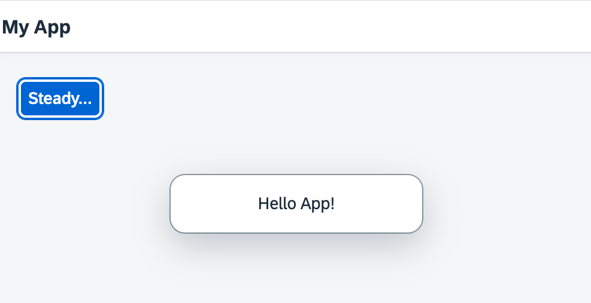

You can view and download all files at Quick Start - Step 2.
sap.ui.define([ "sap/ui/core/mvc/XMLView" ], (XMLView) => { "use strict"; XMLView.create({ viewName: "ui5.quickstart.App" }).then((oView) => oView.placeAt("content")); });
Now we replace most of the code in this file: We remove the inline button from the previous step, and introduce a proper XML view to separate
the presentation from the controller logic. We prefix the view name Quickstart.App with our newly defined namespace.
The view is loaded asynchronously.
Similar to the step before, the view is placed in the element with the content ID after it has finished loading.
<mvc:View
controllerName="ui5.quickstart.App"
displayBlock="true"
xmlns="sap.m"
xmlns:mvc="sap.ui.core.mvc">
<App>
<Page title="My App">
<Button
text="Steady..."
press=".onPress"
type="Emphasized"
class="sapUiSmallMargin"/>
</Page>
</App>
</mvc:View>The presentation logic is now defined declaratively in an XML view.
UI controls are located in libraries that we define in the View tag. In our case, we use the bread-and-butter controls
from sap.m.
The new controls in the view are an App and a Page. They define a Web app with a header bar and a
title.
The button from the previous examples now also defines a type and a class attribute. This improves
the layout of our button and makes it stand out more.
We outsource the controller logic to an app controller. The .onPress event now references a function in the
controller.
sap.ui.define([
"sap/ui/core/mvc/Controller",
"sap/m/MessageToast"
], (Controller, MessageToast) => {
"use strict";
return Controller.extend("ui5.quickstart.App", {
onPress() {
MessageToast.show("Hello App!");
}
});
});In our controller, we load the Controller base class and extend it to define the behavior of our app. We also add the
event handler for our button.
The MessageToast is also loaded as a dependency. When the button is pressed, we now display a "Hello App" message.
Now reload your index.html file. You can see a title bar and a blue button that reacts to your input. Congratulations, you have
created our very first app.